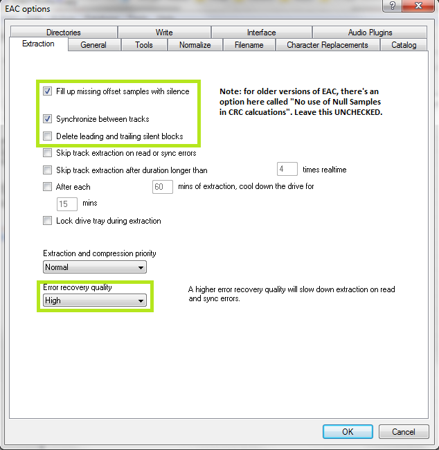
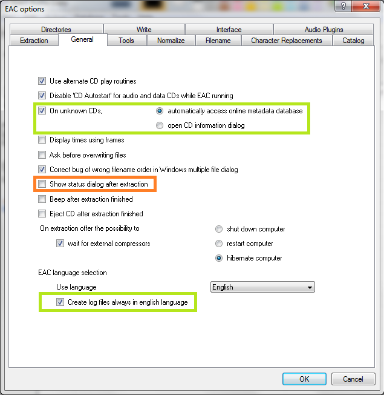
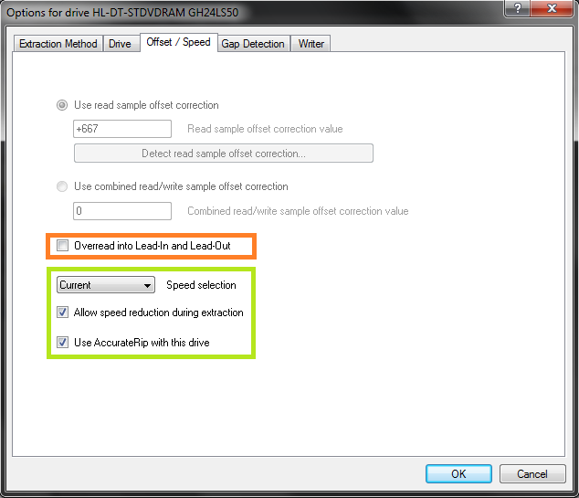
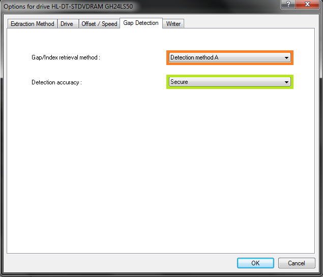
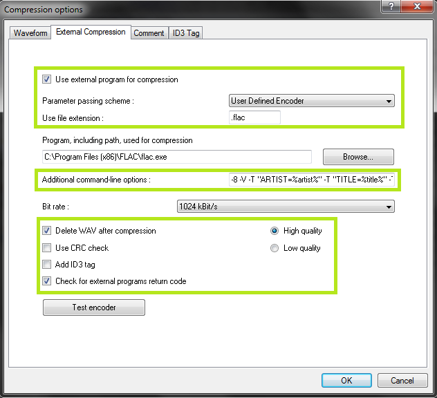

Exact Audio Copy Install and Setup Guide
Exact Audio Copy Setup Guide
- Download Exact Audio Copy from here and open the installer.
- During the install process, make sure to uncheck "GD3 Metadata Plugin" from the list of components to be installed. We don't want it. Everything else can be left at default.
- You may get some Windows Features pop-ups asking you to install some other things, go ahead and do that.
- Go ahead and open EAC now.
- When the Setup Wizard window pops up, just hit cancel. I'm your setup wizard today.
- Now, grab a retail CD, and pop it into your disc drive.
- A window should popup asking to use the CD to configure AccurateRip. Select the Configure button, and once it's done, hit OK.
- Now, at the top of the window, go to EAC -> EAC Options.
- Under the Tools tab, make sure your settings look like the highlighted settings below:

- Now we'll move to the Extraction tab: 
- Over to the General tab now: 
- Head to the Normalize tab and make sure the box is unchecked for Normalize.
- And finally, let's go to the Filename tab:

- Naming scheme: %tracknr2% - %title%
- Various artists: %tracknr2% - %artist% - %title%
- Now we can hit OK and move on to EAC -> Drive Options next.
- Under the Extraction tab, make sure to have these settings checked:

- If you have an older drive, hit Detect Read Features first.
- Always uncheck the C2 error option though.
- Next, move to the Drive tab:

- Just hit the Autodetect button and you'll be fine.
- Now we'll check the Offset/Speed tab: 
- And finally, we'll go the the Gap Detection tab: 
- Now it's time to hit OK, and then go to EAC -> Metadata Options next.
- Under the Metadata Provider tab, make sure it is set to the CUETools DB plugin.
- Hit the Show Options button, and change the options to "Extensive" and "Large", then hit OK.
- Now we can move on to the EAC -> Compression Options, our last step.
- Under the External Compression tab, let's use the following settings:

- You should be able to find a flac folder with flac.exe in your Exact Audio Copy program folder, simply browse and select it.
- Paste the text below into the "Additional command-line options" section, it's just some magic.
-8 -V -T "ARTIST=%artist%" -T "TITLE=%title%" -T "ALBUM=%albumtitle%" -T "DATE=%year%" -T "TRACKNUMBER=%tracknr%" -T "GENRE=%genre%" -T "PERFORMER=%albuminterpret%" -T "COMPOSER=%composer%" -T "ALBUMARTIST=%albumartist%" -T "DISCNUMBER=%cdnumber%" -T "TOTALDISCS=%totalcds%" -T "TOTALTRACKS=%numtracks%" -T "COMMENT=%comment%" %source% -o %dest%
- Ok, now let's go to the ID3 Tag tab, our final tab:

- I personally like to just use "cover" for all album cover names, but you can set it to whatever you want.
- Otherwise, just make sure everything but "Write cover image into extraction folder" is unchecked.
- That's it! EAC is now fully preprared to start ripping some CDs.
For the ripping guide, head on over here next.